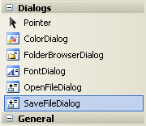
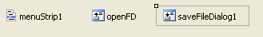
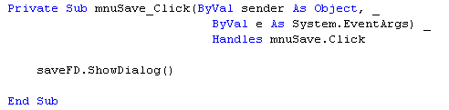

The SaveFileDialog Control
This tutorial is part of an ongoing lesson. Click here for the first part.
The save dialogue box works in the same way as the Open dialogue box. However, you can't use the same control. If you examine the Toolbox, you'll see a control called SaveFileDialog:

Double click this control to add one to your project. If you look at the bottom of the screen, you'll see the control added there, rather than onto your form:

In the image above, the control is selected. Changed the Name property of your control to something more manageable. Change it to saveFD. (You learned how to do this in a previous section.)
Access the code for your File > Save menu item. Then add the following code:
saveFD.ShowDialog()
Your code window should look like this one (Again, underscores have been added to the first line to fit on this page):

Run your programme, then click your File > Save menu item. You should see the Save As dialogue box appear.
Just like the Open control, you can use the properties of the Save control on your dialogue boxes. Try changing these properties, just like you did with the Open properties:
Initial Directory
Title
Filter
FileName
There's another useful property you can use with the Save control - the Overwrite prompt. When you set this property, a message box pops up warning you that the file will be overwritten, and do you want to continue. To use this property, the code is this:
saveFD.OverwritePrompt = True
However, just like the Open box, when you click the Save button no file is actually being saved. You have to write your own code for this. You'll learn how to do this in a later section. For now, let's move on to the Edit menu.